Saya, Ifdal Lisyukri, adalah mahasiswa yang sedang menempuh
pendidikan di program studi Teknik Informatika di Fakultas Teknik
Universitas Negeri Padang. Saat ini, saya telah mencapai semester 6
dalam perjalanan pendidikan saya. Sejak awal, saya telah memiliki
minat yang besar dalam bidang teknologi dan informatika. Keinginan
saya untuk terlibat dalam pengembangan perangkat lunak dan solusi
teknologi telah mendorong saya untuk mengejar pendidikan dalam
bidang ini.
Pendidikan
Berikut adalah riwayat pendidikan saya :
SD
SDN 017 Pandau Jaya, Kec. Siak Hulu, Kab. Kampar,
Riau(2009-2015)
SMP/MTS
MTsN 03 Pekanbaru, Riau(2015)
MTsN 11 Pesisir Selatan Sumatera Barat(2016-2018)
SMA/SMK
SMK Teknologi Lengayang, Pesisir Selatan Sumatera
Barat(2018-2021)
Pendidikan Tinggi
Universitas Negeri Padang(2021-sekarang)
Sekolah Dasar Negeri 017 Pandau Jaya, Kec. Siak Hulu, Kab. Kampar,
Riau(2009-2015)
Pendidikan dasar saya dimulai di SDN 017 Pandau Jaya, yang
merupakan bagian dari daerah Siak Hulu, Kabupaten Kampar, Riau.
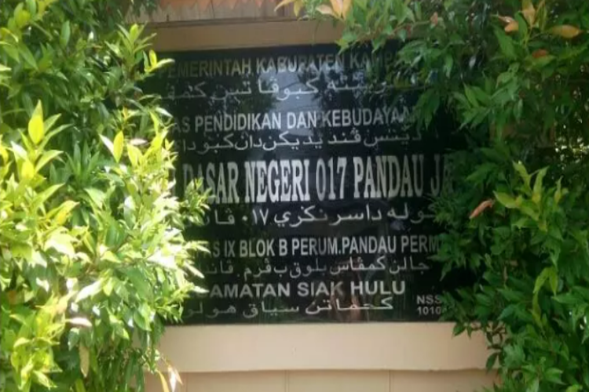
Madrasah Tsanawiyah Negeri 03 Pekanbaru, Riau(2015)
Setelah menyelesaikan pendidikan dasar, saya melanjutkan ke
Madrasah Tsanawiyah (MTs) di MTsN 03 Pekanbaru, Riau, selama satu
semester.
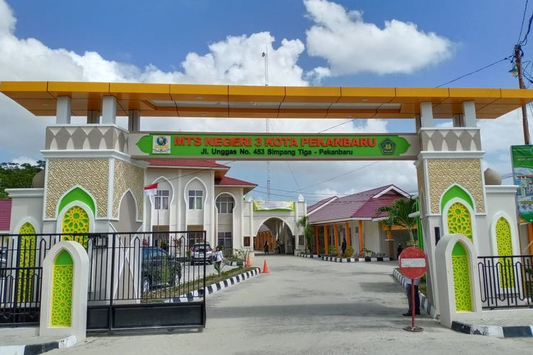
Madrasah Tsanawiyah Negeri 11 Pesisir Selatan Sumatera
Barat(2016-2018)
Kemudian saya pindah dan melanjutkan pendidikan menengah saya di
MTsN 11 Pesisir Selatan, Sumatera Barat, di mana saya
menyelesaikan pendidikan hingga tamat.
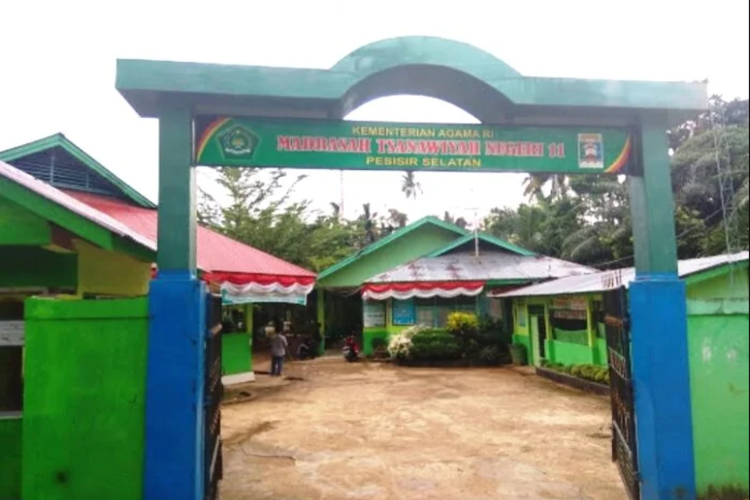
Sekolah Menengah Kejuruan Teknologi Lengayang, Pesisir Selatan
Sumatera Barat(2018-2021)
Untuk pendidikan menengah tingkat atas, saya mengambil jurusan
Teknik komputer & Jaringan di SMK Teknologi Lengayang, yang
berlokasi di Pesisir Selatan, Sumatera Barat.
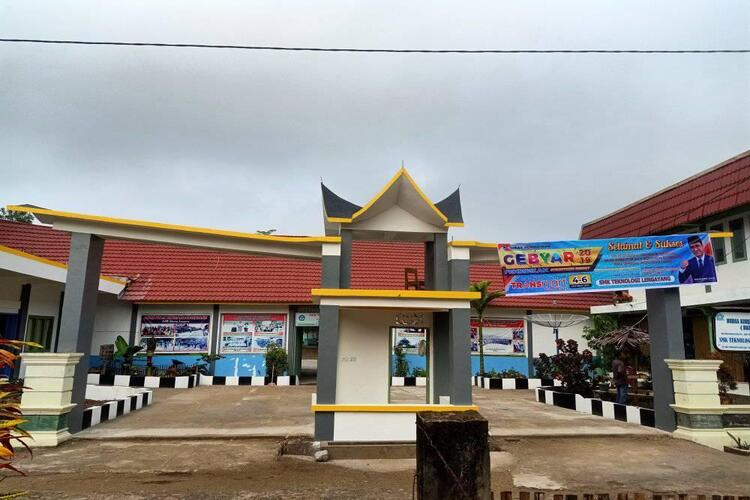
Universitas Negeri Padang(2021-sekarang)
Saat ini, saya sedang menempuh pendidikan tinggi di Universitas
Negeri Padang, di mana saya mengambil jurusan Teknik Informatika.
Portofolio
Berikut adalah daftar proyek yang pernah saya buat :
Website Kampus Cabang unp
Pengembangan website informatif untuk kampus cabang Universitas
Negeri Padang (UNP) dengan informasi mengenai program studi,
profil kampus, dan galeri. Ini merupakan Project Website pertama
saya dan masih berantakan.
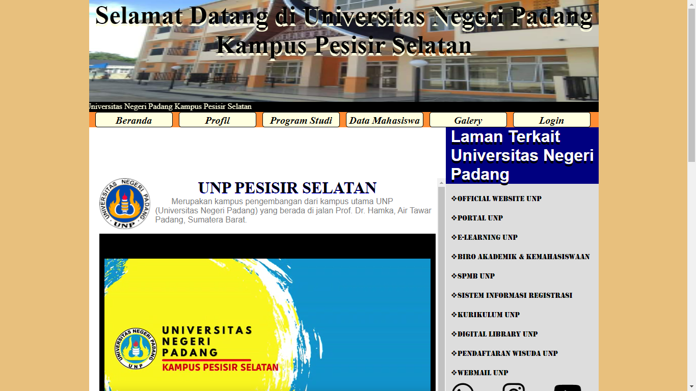
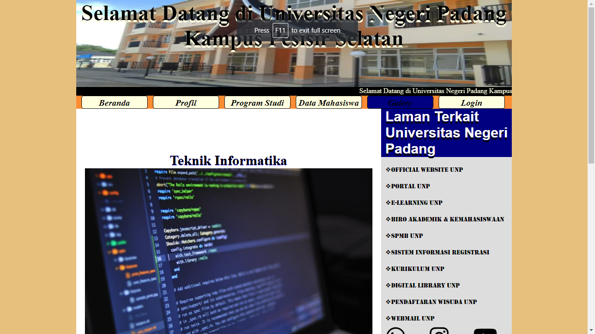
Website Biodata Kelas
Pembuatan website untuk memperkenalkan anggota kelas dengan
informasi biodata dan foto anggota kelas Informatika '21 pada
Kampus Cabang Universitas Negeri Padang'
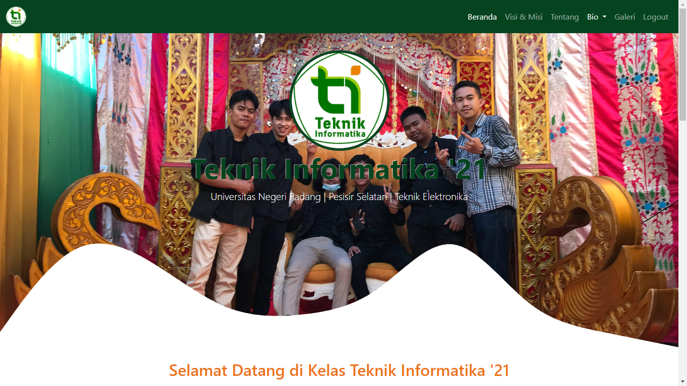
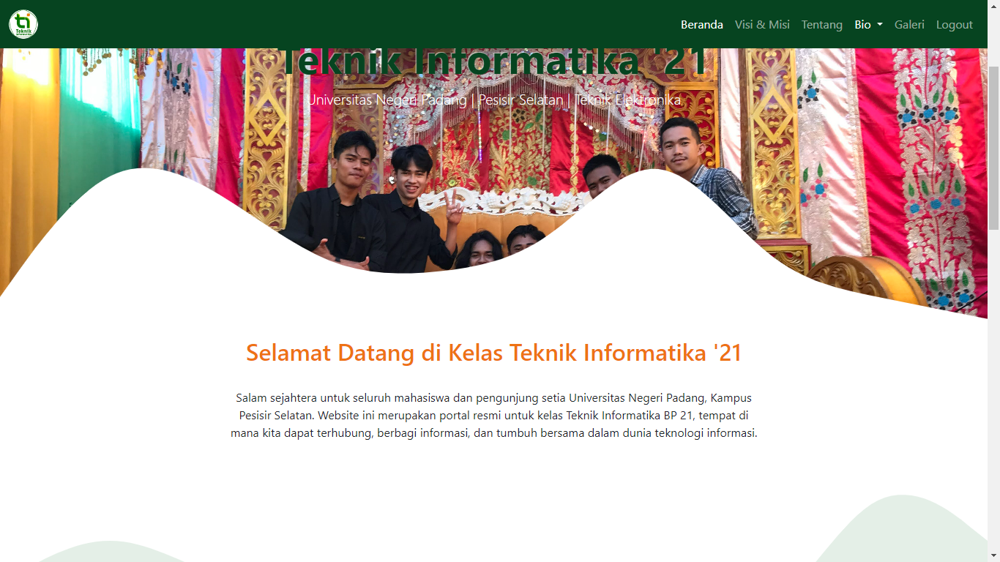
Latihan CSS Positioning & CSS3
Latihan untuk memperdalam pemahaman tentang konsep positioning
dalam CSS untuk mengatur tata letak elemen pada halaman web, dan
mempelajari berbagai fitur CSS3 seperti transisi, transformasi,
dan animasi untuk meningkatkan tampilan dan interaktivitas elemen
pada halaman web.
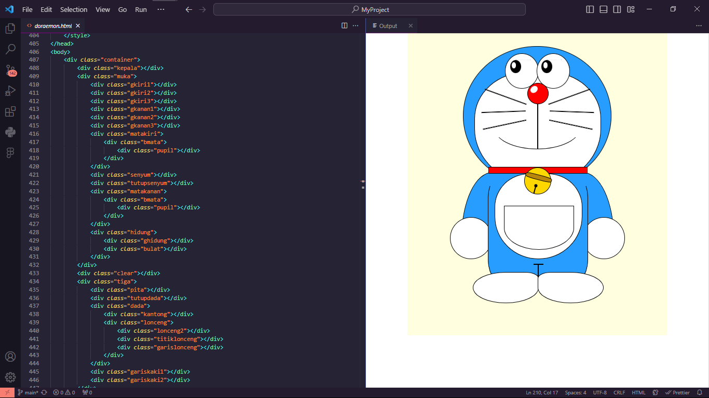
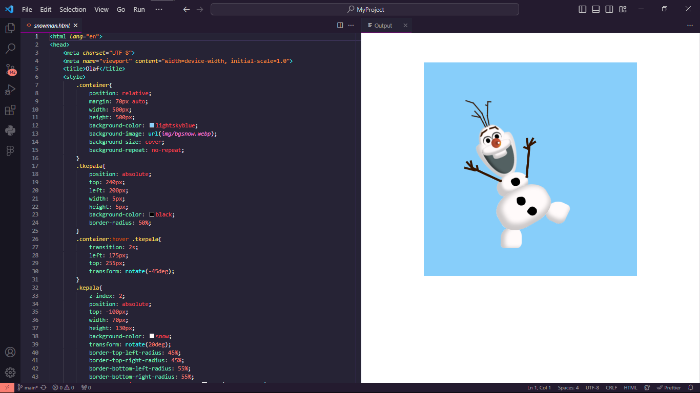
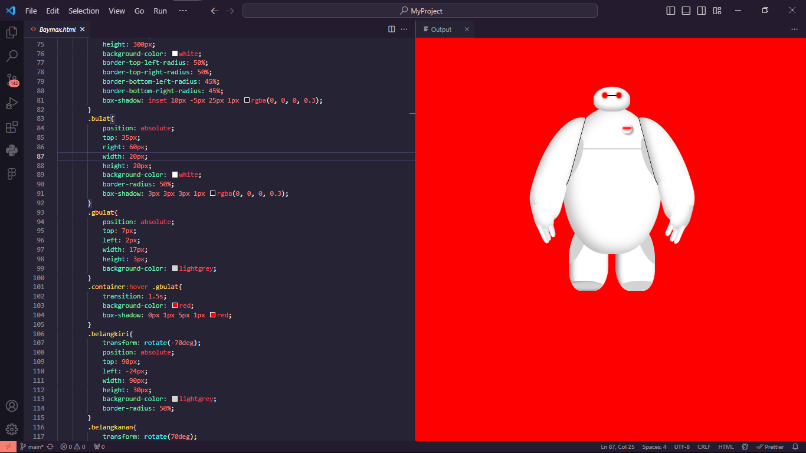
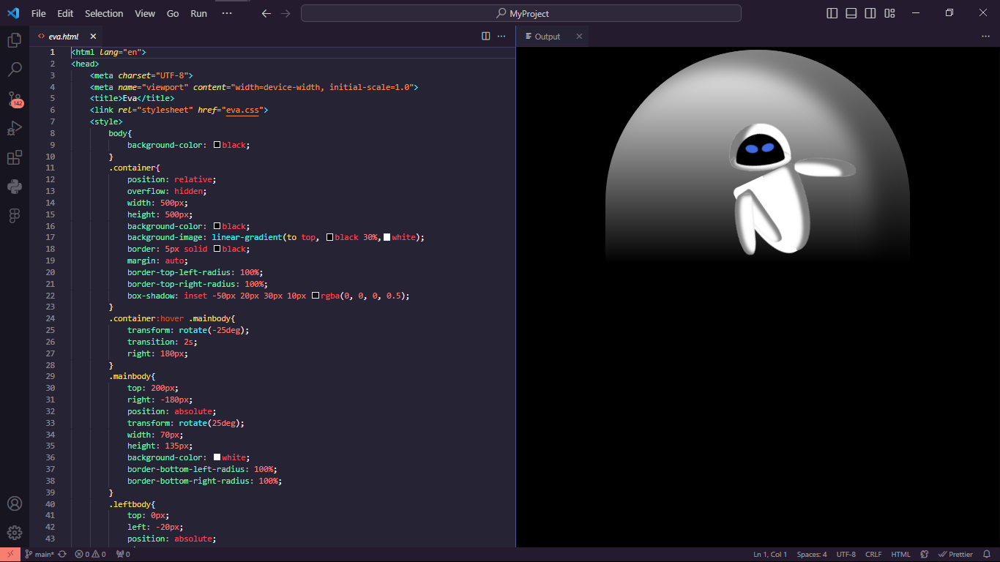
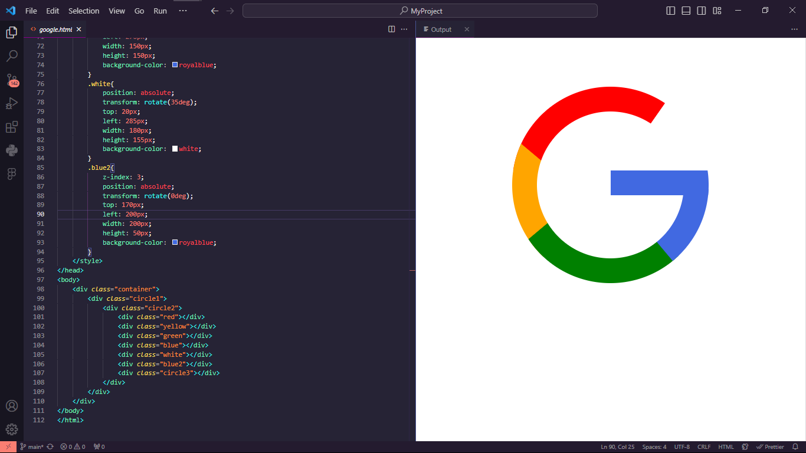
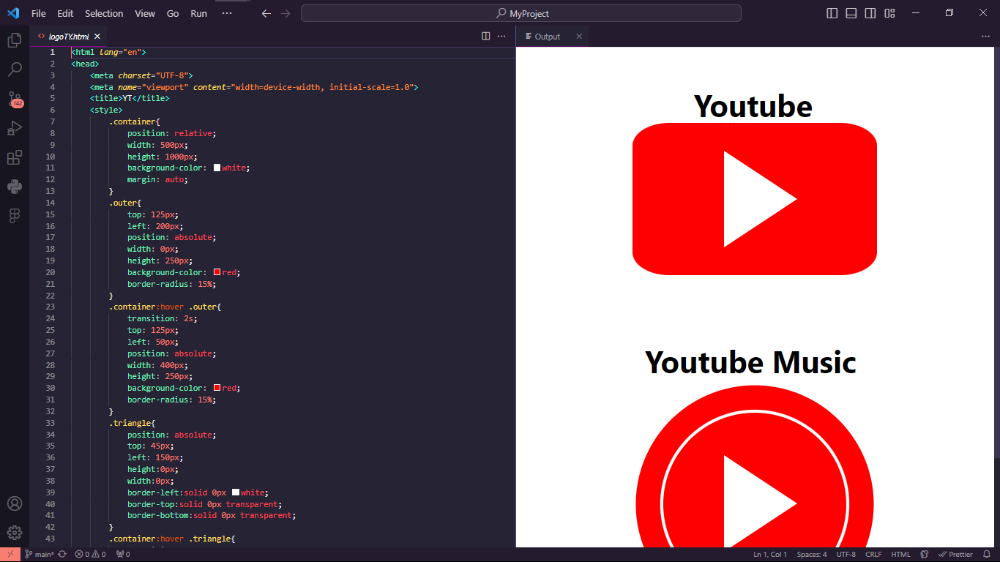
Jelajah Rasa
Project Submission pada kelas Front-End Web Expert pada SIB Dicoding Cycle 6 - Website Katalog Restoran yang menggunakan API sebagai resource data restoran nya.